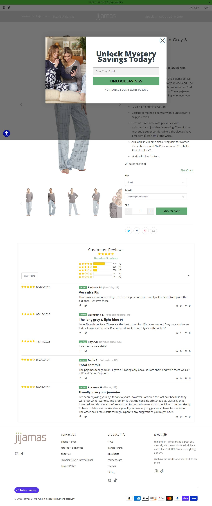
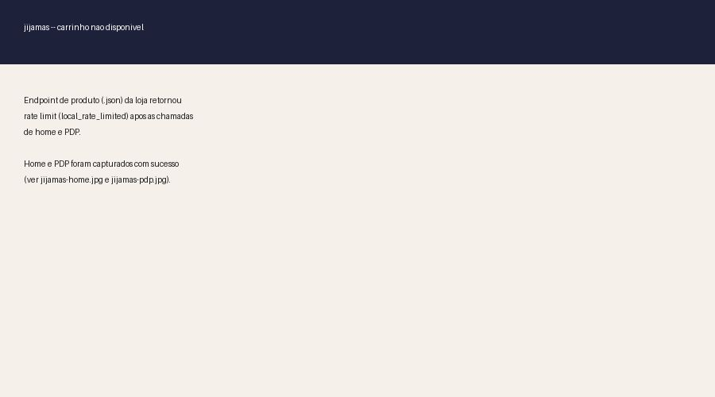

jijamas.com · sleepwear premium de Pima cotton (algodão egípcio de fibra longa) · USD

⚠️ Os 2 anúncios do ângulo "hot sleepers / night sweats" não levam a uma PDP (página de produto) específica: caem direto na home. Este print é a PDP que conseguimos capturar pra mostrar a estrutura de página de produto da loja, não o destino real do anúncio. Ver seção 06 (Dados não obtidos).
Catálogo: 41 produtos (33 pijamas, 1 robe) · faixa $79 a $550 · mediana $117
| Faixa de preço do catálogo | Valor |
|---|---|
| Mínimo | $79 |
| Mediana | $117 |
| Máximo | $550 |
| Criativos únicos (amostra completa, 20 ativos) | 2 (2 hooks distintos) |
| Fator de duplicação | 10x (os 2 hooks rodando em várias variações de público) |
| Janela de criação | dez/2025 a jul/2026 (~8 meses) — giro de criativo lento, testado por meses sem trocar |
| Anúncios por dia | ~0,08/dia (20 anúncios / ~240 dias — ritmo muito mais lento que Lusomé, coerente com "teste pequeno e controlado") |
Mix de formato e nível de sofisticação dos 20 criativos não foi inspecionado visualmente um a um (fica declarado como lacuna na seção 06).
| Headline | Texto do anúncio |
|---|---|
| "Why Hot Sleepers Love These PJs" (por que quem dorme quente ama esses pijamas) | "No tossing. No sweating. No 3 AM wake-up calls." (sem se virar na cama, sem suar, sem acordar às 3 da manhã) |
| "Bye-bye, Night Sweats" (tchau, suores noturnos) | "Flipping your pillow to the cool side for the tenth time tonight?" (virando o travesseiro pro lado frio pela décima vez essa noite?) |

O que faz os 2 hooks funcionarem, decodificado da copy dos anúncios — aqui se estuda a linguagem e o reframe de objeção, não a operação: essa loja é MARCA DTC madura, não dropship replicável.
| Big idea / ângulo | Reposiciona um pijama premium family/unissex de Pima cotton pro sintoma de "hot sleeper"/suor noturno, sem nunca citar menopausa no site. |
| Mecanismo único | Pima cotton (algodão de fibra longa) com "temperature-regulating fibers" — mesmo mecanismo nos dois hooks, só muda o enquadramento. |
| Formato de hook | Um por resultado ("Why Hot Sleepers Love These PJs") e um por pergunta de dor cotidiana ("Flipping your pillow to the cool side..."). |
| Estrutura do presell | Sem PDP dedicada: os anúncios caem direto na home genérica da marca, sem funil próprio pro ângulo. |
| Objeção principal | "Não durmo bem, mas não sei por quê" — respondida culpando o travesseiro/tecido sintético do ambiente, nunca o corpo ou a idade da cliente (evita o tema menopausa de propósito). |
O que estudar de cada página, com o link pra abrir.
| Home — o que estudar | Como uma marca premium mantém o posicionamento central (family/unissex, sem menopausa) intacto enquanto testa um ângulo de sintoma só no anúncio, sem mudar o site. 🏬 abrir home ↗ |
| PDP — o que estudar | Estrutura de PDP de AOV (ticket médio) alto: faixa $79 a $550, garantia de 45 dias de troca (depois vira crédito de loja, não reembolso) e parcelamento Shop Pay em 4x sem juros. 🛍️ abrir loja ↗ |
Widget detectado: Judge.me. Amostra de 1 produto: 43 avaliações, nota 4.84.
Transparência sobre os limites desta ficha. Cada linha mostra o que faltou, por quê, e o que foi tentado.
| Dado | Motivo | Método tentado |
|---|---|---|
| PDP real do ângulo cooling | os 2 anúncios do ângulo não linkam pra uma PDP específica, caem na home | Inspeção dos 2 anúncios ativos na biblioteca de anúncios — nenhum leva a uma URL de /products/ ou /collections/ dedicada. A PDP capturada ("The Soul Mate Short Sleeve Set") é referência de estrutura geral, não do funil do ângulo. |
| Tráfego real (SimilarWeb) | não coletado nesta pesquisa | Loja classificada MARCA/OBSERVAR — fora do foco de triangulação de faturamento desta rodada, que priorizou a única loja replicável desta pesquisa (Lusomé). |
| Faturamento mensal estimado | depende de tráfego real, não coletado | Sem base de visitas medida, uma estimativa aqui seria só achismo — optou-se por não triangular. |
| Contagem total de reviews | Judge.me amostrado em só 1 produto | JSON-LD/widget na PDP amostrada (43 avaliações, nota 4.84); contagem agregada do catálogo completo exigiria raspagem produto a produto. |
| Plataforma confirmada | tech stack sugere mas não confirma Shopify | Detecção de apps comuns (Klaviyo, Judge.me), sem verificação direta do HTML/checkout. |
| Mix de formato/sofisticação dos criativos | exige inspeção visual de cada um dos 20 anúncios | Não realizado nesta rodada; a leitura de anatomia do vencedor ficou restrita à copy e headline. |
| Pixel ID da Meta | não encontrado no HTML da home | Regex no HTML — o pixel pode estar carregado via GTM ou Customer Events do Shopify, que não expõe o ID no fonte. |
jijamas é uma marca de sleepwear premium com ~13 anos de operação, fundadores identificados e catálogo de Pima cotton de $79 a $550 — não posiciona pra menopausa em nenhum lugar do site, o ângulo "hot sleepers / night sweats" é só um teste de hook publicitário rodando sobre a home. Sobrevivência de 100% em 20 anúncios sinaliza um hook que funciona, mas a ausência de uma PDP dedicada mostra que a própria loja ainda não apostou nisso operacionalmente. Vale estudar os 2 hooks e o reframe de objeção (culpa o ambiente, não a idade da cliente), não replicar a operação: manufatura própria e 13 anos de marca são a barreira que um iniciante não paga.